Duomenų modeliavimas II
lekt. Šarūnas Kasnauskas, 2018Regresija
Regresija
Priklausomojo kintamojo reikšmės prognozavimas remiantis nepriklausomų kintamųjų reikšmėmis

Modeliuojama populiacija
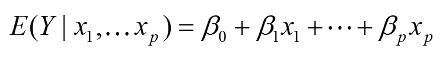Prognozuojamos reikšmės
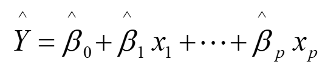Tiesinė regresijos sprendimas
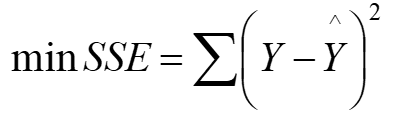Tiesinė regresija
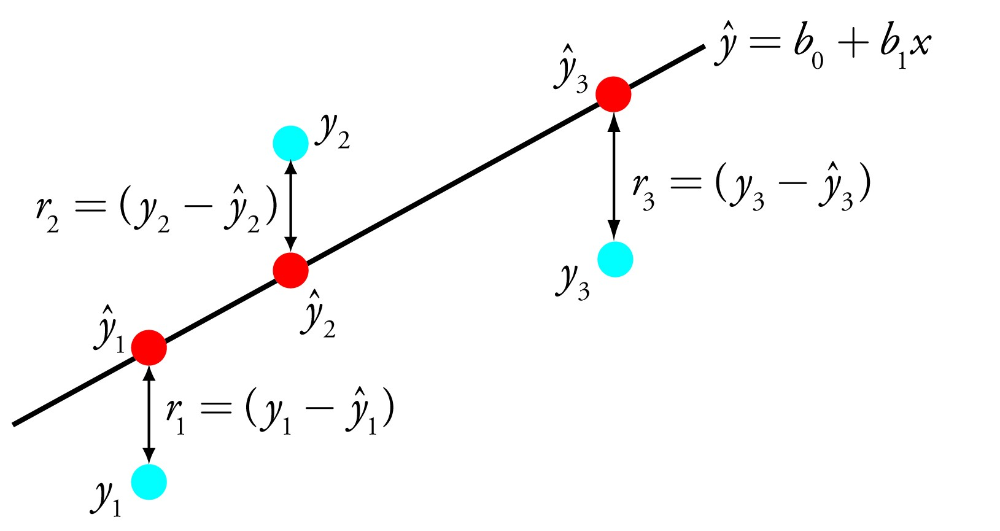R kvadratas
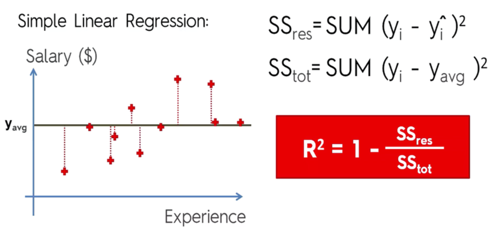Regresijų tipai
- Tiesinė regresija
- Logistinė regresija
- Lasso regresija
- Ridge regresija
- Elastic net procedūra
- Sprendimų miškai
- ...
Lasso regresija
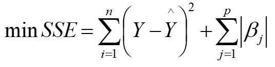Ridge regresija
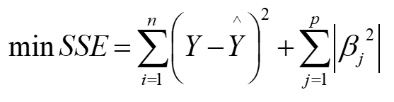Kokią regresiją rinktis?
- Nepriklausomų kintamųjų kiekis
- Regresijos linijos forma
- Priklausomojo kintamojo tipas


Regresijos taikymas: nekilnojamo turto vertės nustatymas
Tiklas: nustatyti nekilnojamo turto vertę pagal požymius
Metodas:
- Surinkti pirktų/parduotų nekilnojamo turto objektų kainas bei jų atributus: kvadratūra, miegamieji, lokacija,..
- Surasti geriausią ir objektyviausią regresijos modelį kainų nuspėjimui
- Remianti modeliu nustatyti prognozuoti naujų objektų vertę
- Supirkti nuvertinamą turtą
Regresijos taikymas: darbuotojų išėjimo iš darbo tikimybė
Tiklas: nustatyti dabartinių darbuotojų išėjimo iš darbo tikimybę
Metodas:
- Surinkti prieinamus duomenis apie dabartinius ir buvusius darbuotjus: stažas, atlyginimas, pareigos, įsitraukimas,..
- Sužymėti darbuotojus kaip išėjusius ar ne (1 ar 0)
- Apmokyti logistinę regresiją pagal atributus
- Dabartinio darbuotojo tikimynei išaugus, imtis veiksmų
Dirbtiniai neuroniniai tinklai
Dibtinis neuroninis tinklas
tai masyvus, paralelinis, paskirstytas procesorius sudarytas iš paprastų skaičiavimo elementų, kurie turi savybę saugoti informaciją ir padaryti ją prieinamą naudojimui

Biologinis neuronas
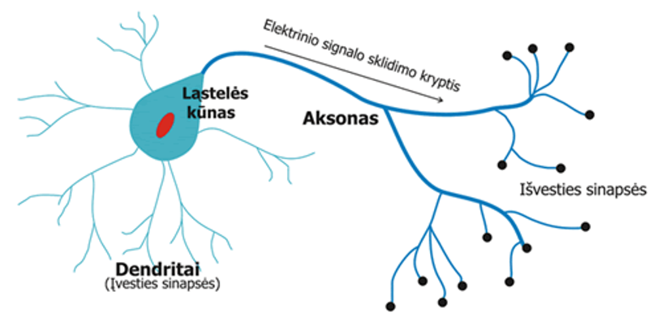Dirbtinis neuronas (perceptronas)
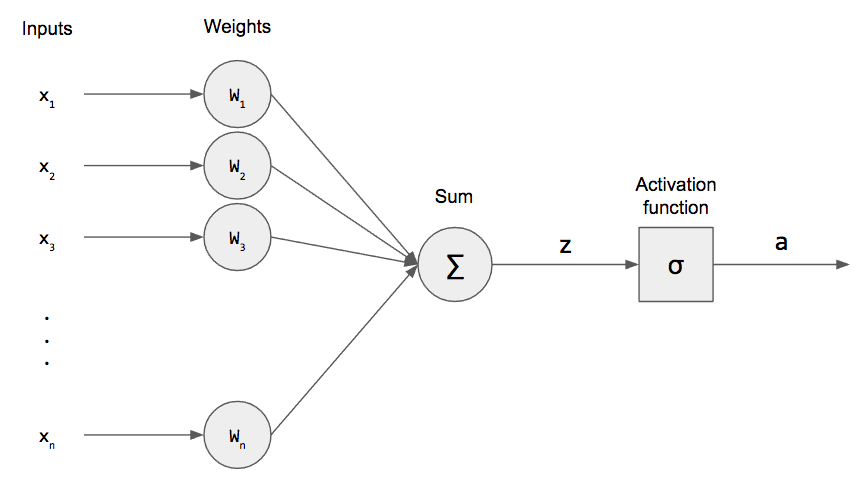Aktyvacijos funkcijos

Gilus neuroninis tinklas
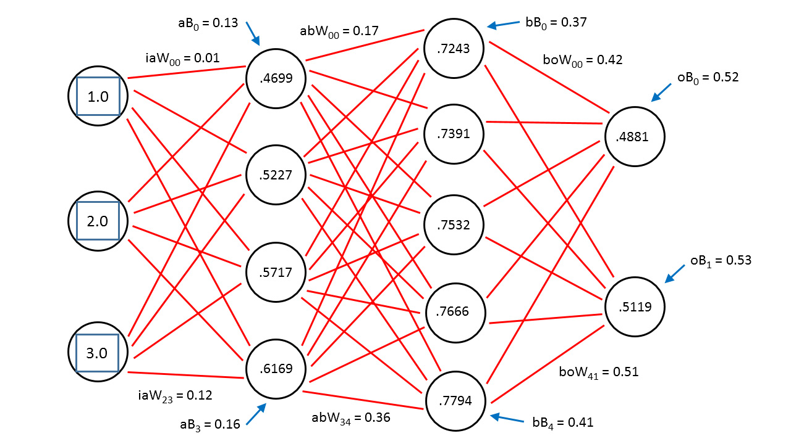Aktyvacijos funkcijos 2
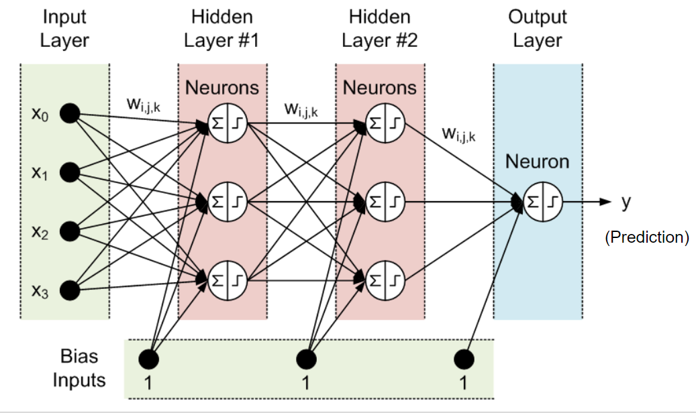Backpropagation
Konvoliuciniai neuroniniai tinklai
Neuroninių tinklų tipai

Neuroninių tinklų taikymas: Enhance
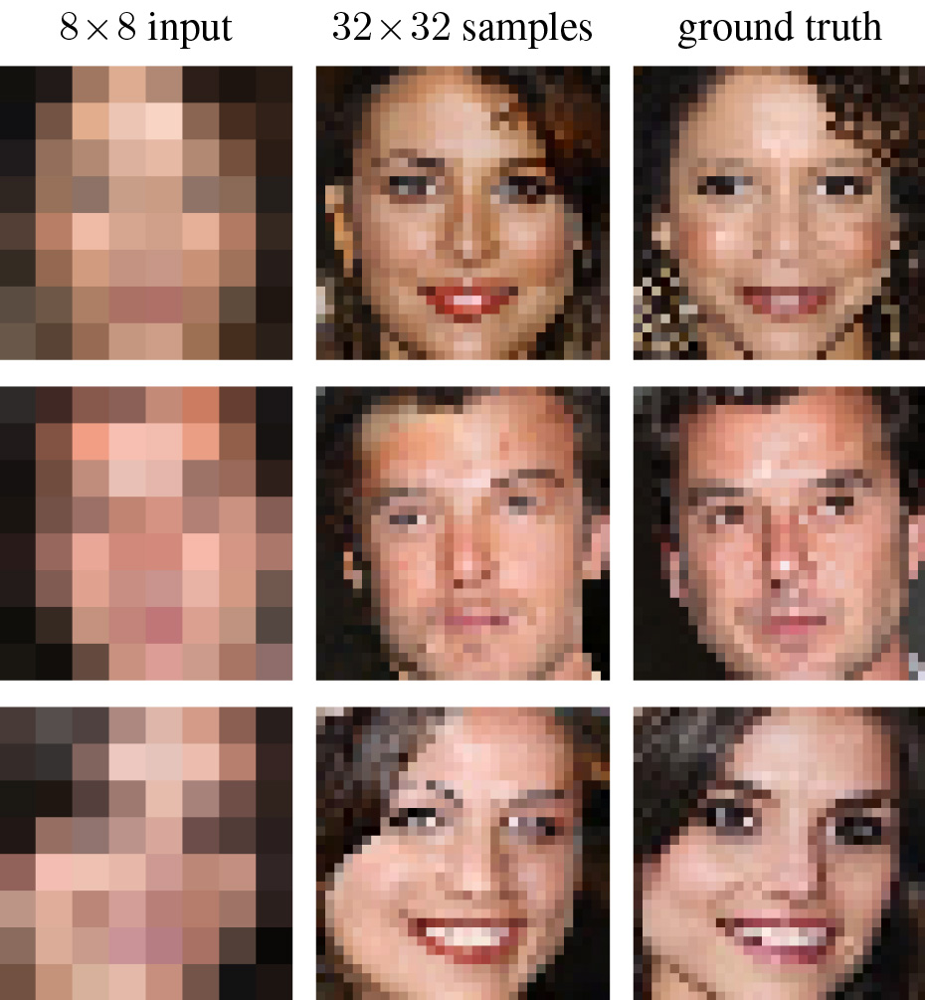Neuroninių tinklų taikymas: stilių perkėlimas
Procesas
CRISP-DM